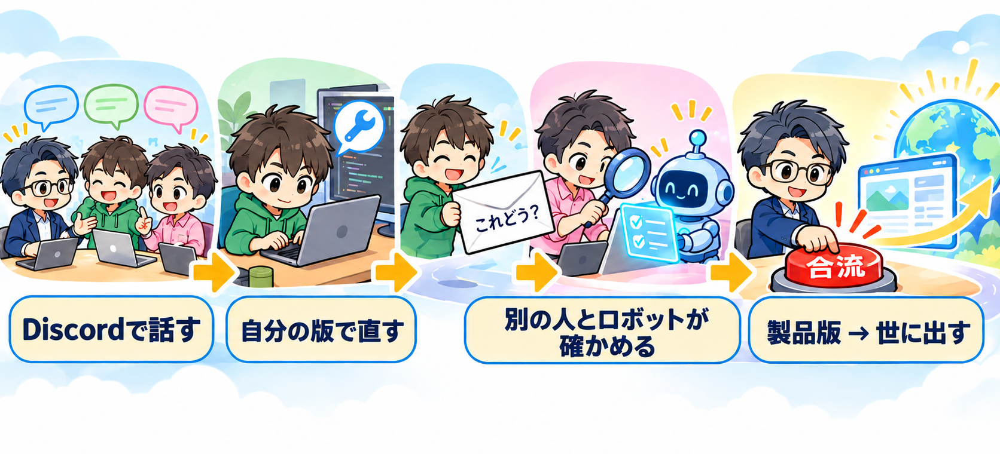

運転台 共同開発の進め方
西田（Mits）・森田さん・棚原さん
1流れはこの1本

- 1Discord で話す相談・困りごと・進み具合
- 2自分の版で直す写し取った自分の版（Fork）で自由に作る
- 3「これどう？」を出す本流に入れたいものだけ・小さな Pull Request
- 4別の人と自動テストが確かめる
- 5西田が本流に合流して製品版に入れ、世に出す
2段0 から段5 へ

- 段0作業場を、人を入れられる状態にするいまここ
- 段1Discord を開発の場として整える（チャンネル5つ）
- 段2森田さん・棚原さんが GitHub で自分の版を持つ
- 段3Pull Request ごとに自動テストが走るようにする
- 段43人で1往復ずつ試す（自分の版から小さな Pull Request を1本ずつ）
- 段54人目から広げる
3森田さんの動き方
Discord で話す
- #雑談・相談 日常の連絡、軽い相談、アイデア。記録しなくてよい
- #議論・提案 方針、仕組み、改善案。テーマごとにスレッドを立てる
- #決定・依頼 正式に決めたこと、誰かに頼んだことを短く書く
- #GitHub通知 Issue の登録・完了、大事な文書の更新が自動で流れる。読むだけ
- #開発・成果共有 各自が作ったものを画面写真やリンクで見せる
自分の版で直す
- 写し取った自分の版（Fork）で自由に作る。独自の版のまま残ってよい
- 本流に入れたいものだけ、今の本流から切った小さな Pull Request で出す
- 週に1回、本流を自分の版に取り込む
「これどう？」を出す（Pull Request）
自分の版で作る→入れたいものだけ小さく切る→Pull Request
- 変更の中身と、影響する画面
- テストを足したか
- 確かめた人
確かめる人
- 作った人以外の1人
- ＋ 自動のテスト
- 合格したら、西田が本流に合流
GitHub に残すもの
- 決定（方針・決まり・大事な判断）
- 課題（誰かが手を動かすこと。Issue）
- 知識（あとでまた使う手順・知っておくこと）